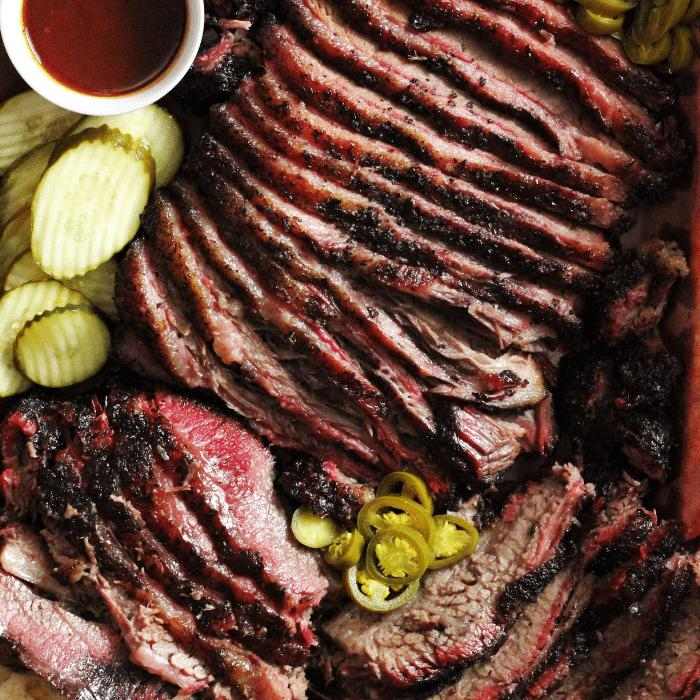

Texas Brisket

Description
Texas Style Smoked Beef Brisket is more than a simple recipe, it’s a process for melt in your mouth smoked brisket. All you need is salt, pepper, smoke, and time, and you’re on your way to eating the best beef brisket of your life.
Ingredients
- 1 12-14 pound whole packer brisket
- 2 Tbsp coarse Kosher salt
- 2 Tbsp coarse ground black pepper
- 2 Tbsp garlic powder (optional)
Steps
- Trim brisket
- In a bowl or empty spice container, mix salt, pepper, and garlic. Coat brisket evenly with rub
- Preheat smoker to 225 degrees. Place brisket on smoker with the point facing the heat source
- Cook until internal temp reaches 165, then pull and wrap in pink butcher paper
- Return to smoker at 225 and coninute cooking until internal temp reaches 205
- Allow brisket to reast 1 hear before slicing